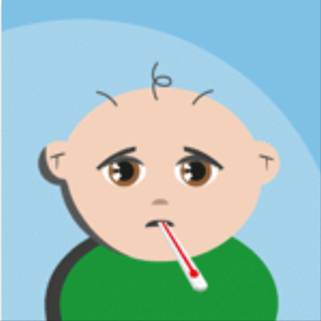
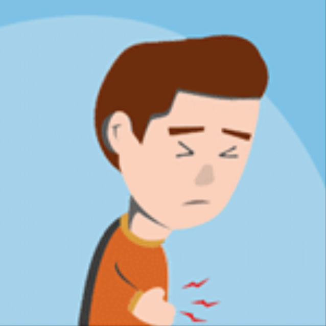
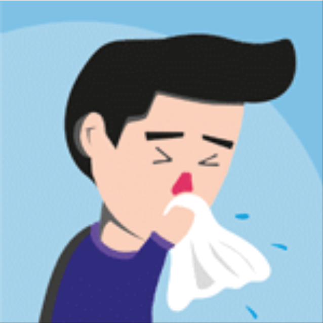
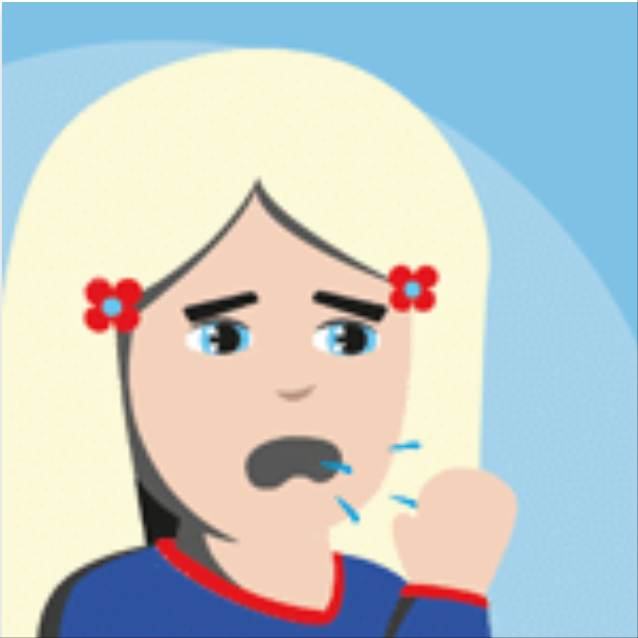

Gezondheidsinformatie
-
 Blaasontsteking
Blaasontsteking
-  Koorts bij kinderen
- Coronavirus
-  Buikpijn
-  Griep
-  Hoesten
Download onze gratis app
Hardnekkige huiduitslag of een kind met koorts?
Iedereen twijfelt wel eens of een bezoek aan de huisarts nodig is.
Meer dan 500.000 downloads
Wilt u op de hoogte gehouden worden van alle ontwikkelingen?
Meld u dan aan voor de Moet ik naar de dokter?
nieuwsbrief.
Raadpleeg voor meer informatie onze privacy- en cookieverklaring.